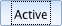
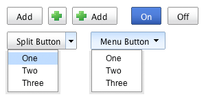

YUI 2: Button
YUI 2: Button
The Button Control enables the creation of rich, graphical buttons that function like traditional HTML form buttons. Unlike traditional HTML form buttons, buttons created with the Button Control can have labels that are different from their value. With the inclusion of the optional Menu Control, the Button Control can also be used to create menu buttons and split buttons, controls that are not available natively in HTML. Moreover, the Button Control allows you to create more visually engaging implementations of radio-button and check-box controls.
On This Page:
Quick Links:
- Examples: Explore examples of the Button Control in action.
- API Documentation: View the full API documentation for the Button Control.
- Release Notes: Detailed change log for the Button Control.
- License: The YUI Library is issued under a BSD license.
- Download: Download the Button Control as part of the full YUI Library at YUILibrary.com.
Button Types
The Button Control enables the creation of eight different types of buttons:
- Push Button (type "push")
- Basic push button that can execute a user-specified command when pressed.
- Link Button (type "link")
- Navigates to a specified URL when pressed.
- Submit Button (type "submit")
- Submits the parent form when pressed.
- Reset (type "reset")
- Resets the parent form when pressed.
- Checkbox Button (type "checkbox")
- Maintains a "checked" state that can be toggled on and off.
- Radio Button (type "radio")
- Maintains a "checked" state that can be toggled on and off. Use with the ButtonGroup class to create a set of controls that are mutually exclusive; checking one button in a group will uncheck all others.
- Menu button (type "menu")
- When pressed will show/hide a menu.
- Split Button (type "split")
- Can execute a user-specified command or display a menu when pressed.
Getting Started
To use the Button Control, include the following source files:
<!-- Fonts CSS - Recommended but not required --> <link rel="stylesheet" type="text/css" href="http://yui.yahooapis.com/2.9.0/build/fonts/fonts-min.css"> <!-- Core + Skin CSS --> <link rel="stylesheet" type="text/css" href="http://yui.yahooapis.com/2.9.0/build/button/assets/skins/sam/button.css"> <!-- OPTIONAL: Menu Stylesheet (required for creating buttons of type "menu" and "split") --> <link rel="stylesheet" type="text/css" href="http://yui.yahooapis.com/2.9.0/build/menu/assets/skins/sam/menu.css"> <!-- Dependencies --> <script src="http://yui.yahooapis.com/2.9.0/build/yahoo-dom-event/yahoo-dom-event.js"></script> <script src="http://yui.yahooapis.com/2.9.0/build/element/element-min.js"></script> <!-- OPTIONAL: Menu and Container Core (required for creating buttons of type "menu" and "split") --> <script src="http://yui.yahooapis.com/2.9.0/build/container/container_core-min.js"></script> <script src="http://yui.yahooapis.com/2.9.0/build/menu/menu-min.js"></script> <!-- Source file --> <script src="http://yui.yahooapis.com/2.9.0/build/button/button-min.js"></script>
yui-skin-sam class name to an element that is a parent of the element
in which the Button Control lives. You can usually accomplish this simply by putting the class on the
<body> tag:
<body class="yui-skin-sam">
For more information on skinning YUI components and making use of default skins, see our Understanding YUI Skins article here on the website.

YUI Dependency Configurator:
Instead of copying and pasting the filepaths above, try letting the YUI dependency Configurator determine the optimal file list for your desired components; the Configurator uses YUI Loader to write out the full HTML for including the precise files you need for your implementation.
Note: If you wish to include this component via the YUI Loader, its module name is button. (Click here for the full list of module names for YUI Loader.)
Where these files come from: The files included using the text above will be served from Yahoo! servers. JavaScript files are minified, meaning that comments and white space have been removed to make them more efficient to download. To use the full, commented versions or the -debug versions of YUI JavaScript files, please download the library distribution and host the files on your own server.
Order matters: As is the case generally with JavaScript and CSS, order matters; these files should be included in the order specified above. If you include files in the wrong order, errors may result.
Basic Setup
Buttons can be created with or without existing HTML. In either case, a Button's HTML is composed of two <span> elements wrapping a <button> element or (in the case of Buttons of type "link") an <a> element.
The Button Control is defined by YAHOO.widget.Button and can be instantiated three different ways:
- Using an existing
<input>,<button>, or<a>element - Using no existing HTML
- Using pre-defined Button Control HTML
Using an existing <input>, <button>, or <a> element
A Button can be created using an existing <input>, <button>, or <a> element as a source element:
<input type="checkbox" id="checkbox1" name="field1" value="somevalue" checked>
When creating a Button instance from existing markup the markup for the
Button must be already parsed by the browser and its DOM tree ready to be
scripted. This is, of course, a basic principle of DOM scripting—you
cannot script what hasn't been loaded. To ensure the markup for a Button is
ready to be scripted either place the <script> block
after the Button markup, or use the Event Utility's
onContentReady method. For
more, see the section titled Using Button with
YAHOO.util.Event.onContentReady.
To instantiate a Button, pass the id of the source element as the first argument to the Button's constructor. The attributes of the source element are captured and used for the creation of a new element that replaces the source element inline. Additional configuration attributes for a Button can be set at instantiation time by specifying them in an object literal that is passed as the second argument to the Button's constructor. Note: the value of configuration attributes passed to the Button constructor will trump those of the corresponding HTML attributes of the original source element.
var oButton = new YAHOO.widget.Button( "checkbox1", // Source element id { checked: false, // Attribute override label: "Check me!" });
Using no existing HTML
To build a Button without any existing HTML, pass a set of configuration attributes as a single argument to the constructor using an object literal.
var oButton = new YAHOO.widget.Button({ id: "mybuttonid", type: "button", label: "My Button", container: "someelement" });
In most cases, it is necessary to specify the button's id, type, label and container (the HTML element that the button should be appended to once created). If an id is not specified for the button, one will be generated using the generateId method of the Dom utility. Similarly, if the "type" attribute is omitted, the default type of "button" will be applied.
Using pre-defined Button Control HTML
A Button can be created using pre-defined Button Control HTML.
<span id="mycheckbox" class="yui-button"> <span class="first-child"> <button type="button">Check me!</button> </span> </span>
To instantiate a Button using the Button Control HTML, pass the id of the Button's <span> element as the first argument to constructor and any additional configuration attributes as the second argument via an object literal.
var oButton = new YAHOO.widget.Button("mycheckbox", { type: "checkbox", name: "field1", value: "somevalue" });
Using Button
This section describes several common uses and customizations of the Button Control:
- Using Button with YAHOO.util.Event.onContentReady
- Styling Types
- Styling State
- Styling Focus
- Using Button with HTML forms
- Using ButtonGroup
- Using Button with Menu
- Handling Events
- Configuration Attributes
Using Button with YAHOO.util.Event.onContentReady
As the Button Control can be used to enhance existing HTML <input>, <button>, or <a> elements, it is recommended that Button Controls be instantiated as soon as the elements they are replacing are available in the DOM. This helps minimize any flicker or redraw that might result from the replacement of the source HTML element with its corresponding Button instance HTML.
To instantiate a Button instance as soon as its source HTML element is available in the DOM, use the onContentReady method of the Event utility. For example, consider the following HTML:
<input type="button" id="ok-button" name="ok-button" value="OK">
To instantiate a Button Control as soon as this <input> element is available in the DOM, pass the source element's id (in this case "ok-button") as the first argument to the YAHOO.util.Event.onContentReady method along with a reference to the function to be called when the element is ready.
function onButtonReady() { var oOKButton = new YAHOO.widget.Button("ok-button"); } YAHOO.util.Event.onContentReady("ok-button", onButtonReady);
The onContentReady method is especially useful when creating a group of Buttons at once. In this case, wrap the source HTML elements in a containing element and give it a unique id. For example:
<div id="buttons"> <input type="button" id="ok-button" name="ok-button" value="OK"> <input type="button" id="cancel-button" name="cancel-button" value="Cancel"> </div>
Pass the id of the parent element (in this case "buttons") to the YAHOO.util.Event.onContentReady method along with a reference to the function to be called when the element is ready
function onButtonsReady() { var oOKButton = new YAHOO.widget.Button("ok-button"); var oCancelButton = new YAHOO.widget.Button("cancel-button"); } YAHOO.util.Event.onContentReady("buttons", onButtonsReady);
Usage of the onContentReady method is demonstrated in many of the Button Control examples. For more information, read the section titled Using the onAvailable and onContentReady Methods section of the Event utility's landing page.
Styling Types
Button uses CSS classes to provide an easy way to style all of the various types. All of the CSS classes used by Button are prefixed with "yui-" and the root element of every Button instance has two classes applied: a generic class of "yui-button" and a type-specific class (for example: "yui-split-button). This strategy allows for the application of generic styles to all buttons while at the same time facilitating type-specific styling. For example:
.yui-button { /* Styles for all Buttons here. */ } .yui-checkbox-button { /* Styles for Buttons of type "checkbox" here. */ }
Styling State
Like styling types, Button state is styled through the use of CSS classes. There are four states common to all of the various types of buttons:
| State | Description |
|---|---|
| Triggered when a Button receives focus. | |
| Triggered when the user hovers over a Button with the mouse. | |
|  | Triggered when a Button is depressed — either by the user mousing down on a Button or by pressing the Enter key or spacebar when a Button has focus. |
| Triggered when the button is disabled. |
For states that are common to all Buttons, two classes are applied: a generic class name (i.e. yui-button-[state]) and a type-specific state class name (yui-[type]-button-[state]). For example:
.yui-button-focus { /* Styles for all focused Buttons here. */ } .yui-checkbox-button-focus { /* Styles for focused Buttons of type "checkbox" here. */ }
This strategy allows for the definition of generic styles that apply to all states of all Button instances, while providing a means for uniquely styling states for Buttons of a specific type.
In addition to the common states, there are some states that are specific only to certain Button types. Buttons of type "checkbox" and "radio" both have a "checked" state represented by both a generic and type-specific CSS class:
.yui-button-checked { /* Styles for all checked Buttons here. */ } .yui-checkbox-button-checked { /* Styles for checked Buttons of type "checkbox" here. */ } .yui-radio-button-checked { /* Styles for checked Buttons of type "radio" here. */ }
The default rendering for the "checked" state is illustrated below:
Buttons of type "split" have two unique states: "activeoption" and "hoveroption". The "activeoption" state is set in reponse to the firing of the "option" event, which is fired when the user has invoked the display of a split button's optional menu. When a Button is in the "activeoption" state, a class name of "yui-split-button-activeoption" is applied to the Button's root element. The default style for the "activeoption" state is illustrated below:
The "hoveroption" state is set when the user is hovering the mouse inside the region of a Split Button that triggers the display of its optional menu. When a Button is in the "hoveroption" state, a class name of "yui-split-button-hoveroption" is applied to the Button's root element.
Styling Focus
When Button instances recieve focus, their inner <button>
or <a> element is outlined or highlighted in some way by
the browser. Typically the rendering of the focus outline follows that of
native OS controls for the platform, however, the style can vary depending on
the OS + browser combination. For example, in Firefox the focus outline is
drawn as a dotted border, while in Safari the focus outline is drawn as a blue
border. Even though the focus style is inconsistent across OS + browser
combinations, this inconsistency is of benefit to the user for two reasons: it
provides a visual indication of keyboard navigability and does so in a way that
is familiar on their OS + browser of choice.
If it is absolutely necessary to hide the focus outline for Button instances
it is possible to do in all of the supported browsers with the exception
of Opera. To disable the focus outline in Internet Explorer, set the
hideFocus
attribute to "true." For example:
<span id="mybutton" class="yui-button"> <span class="first-child"> <button type="button" hidefocus="true">Click Me</button> </span> </span>
Or if you are creating Buttons from script:
YAHOO.util.Event.onDOMReady(function () { var oButton = new YAHOO.widget.Button({ id: "mybutton", type: "button", label: "Click Me", container: document.body }); oButton.get("element").firstChild.firstChild.hideFocus = true; });
In Firefox and Safari, set the
outline
CSS property to "none." For example:
.yui-button button, .yui-button a { outline: none; }
Using Button with HTML forms
Buttons created with the Button Control can be used with or without HTML forms. When appended to a form, each Button Control will behave like a traditional HTML form element. Resetting a form containing Button Controls will result in each Button reverting to its initial value and/or state. When appended to a form, Buttons of type "submit," "checkbox," "radio," "menu," and "split" listen for the "submit" event of their parent form and will create a hidden field representing their name and value in response to the firing of that event to ensure the form's data set is accurate when the form is submitted.
Buttons of type "menu" and "split" will append two hidden fields to
their parent form when it is submitted — one representing the name and
value of the Button, the other representing the name and value of the Menu. The
name used for the hidden field for the Button's Menu depends on how the Button's
Menu was created. If the Button's Menu was created from existing markup using a
<select> element, the name of the hidden field will
be identical to that the of the <select> element. If the
Menu was created using JavaScript, the name of its hidden field will be the
name of the Button followed by "_options". For example, if the Button's
name configuration attribute is set to "button1" the name of the hidden field
for its Menu will be "button1_options".
Using ButtonGroup
The ButtonGroup class creates a set of buttons that are mutually exclusive; checking one button in the group will uncheck all others in the group. The ButtonGroup class is defined by YAHOO.widget.ButtonGroup and a ButtonGroup's root HTML element is a <div>.
Creating a ButtonGroup using existing HTML
A ButtonGroup can be created from a set of existing <input type="radio"/> elements:
<div id="buttongroup1" class="yui-buttongroup"> <input id="radio1" type="radio" name="radiofield1" value="Radio 1" checked> <input id="radio2" type="radio" name="radiofield1" value="Radio 2"> <input id="radio3" type="radio" name="radiofield1" value="Radio 3"> <input id="radio4" type="radio" name="radiofield1" value="Radio 4"> </div>
To instantiate a ButtonGroup from existing HTML, pass the id of the ButtonGroup's <div/> element as the first argument to the ButtonGroup constructor and any additional configuration attributes as the second argument via an object literal. The ButtonGroup will automatically search its child nodes for HTML radio buttons (<input type="radio"/>) and use those elements to create instances of YAHOO.widget.Button of type "radio."
var oButtonGroup1 = new YAHOO.widget.ButtonGroup("buttongroup1")
Alternatively, each Button in a ButtonGroup can be defined using the YUI Button HTML: An element with a class of "yui-button" and "yui-radio-button" containing a element with a class of "first-child" containing a <button/> element.
<div id="buttongroup2" class="yui-buttongroup"> <span id="radio5" class="yui-button yui-radio-button yui-button-checked"> <span class="first-child"> <button type="button" name="radiofield2" value="Radio 5"> Radio 5 </button> </span> </span> <span id="radio6" class="yui-button yui-radio-button"> <span class="first-child"> <button type="button" name="radiofield2" value="Radio 6"> Radio 6 </button> </span> </span> <span id="radio7" class="yui-button yui-radio-button"> <span class="first-child"> <button type="button" name="radiofield2" value="Radio 7"> Radio 7 </button> </span> </span> <span id="radio8" class="yui-button yui-radio-button"> <span class="first-child"> <button type="button" name="radiofield2" value="Radio 8"> Radio 8 </button> </span> </span> </div>
To instantiate a ButtonGroup using the Button Control HTML, pass the id of the ButtonGroup's root element (the element with the classes "yui-buttongroup" and "yui-radio-button" applied) as the first argument to constructor and any additional configuration attributes as the second argument via an object literal.
var oButtonGroup2 = new YAHOO.widget.ButtonGroup("buttongroup2");
Creating a ButtonGroup without existing HTML
To build a ButtonGroup with no existing HTML, pass a set of configuration attributes as a single argument to the constructor using an object literal. Add buttons to the ButtonGroup via the addButton or addButtons methods.
var oButtonGroup = new YAHOO.widget.ButtonGroup({ id: "mybuttongroup", name: "radiofield", container:"someelement" }); oButtonGroup.addButtons([ { label:"Radio 1", value:"Radio 1" }, { label:"Radio 2", value:"Radio 2" }, { label:"Radio 3", value:"Radio 3" }, { label:"Radio 4", value:"Radio 4" } ]);
The name of the ButtonGroup will automatically be applied to each Button and each Button's type will be set to "radio."
Using Button with Menu
By including the Menu family of controls, it is possible to create two different types of Buttons that incorporate a menu:
- Menu Button (type "menu")
- When pressed will show/hide a menu.
- Split Button (type "split")
- Can execute a user-specified command or display a menu when pressed.
Like all other Buttons, menu buttons and split buttons can be created with or without existing HTML. In either case, create a menu button or a split button by setting the Button's "type" attribute to "menu" or "split" and "menu" attribute to one of the following values:
- Object specifying a rendered YAHOO.widget.Menu instance.
- Object specifying a rendered YAHOO.widget.Overlay instance.
- String specifying the id attribute of the
<div>element used to create the menu. By default the menu will be created as an instance of YAHOO.widget.Overlay. If the default CSS class name for YAHOO.widget.Menu is applied to the<div>element, it will be created as an instance of YAHOO.widget.Menu. - String specifying the id attribute of the
<select>element used to create the menu. - Object specifying the
<div>element used to create the menu. - Object specifying the
<select>element used to create the menu. - Array of object literals, each representing a set of YAHOO.widget.MenuItem configuration attributes.
- Array of strings representing the text labels for each menu item in the menu.
This section provides information on how to create and use Buttons that incorporate a menu.
- Creating From Existing Markup
- Creating From JavaScript
- Using A Button's Menu
- Lazy Loading
- Handling Menu Events
- The
selectedMenuItemAttribute
Creating From Existing Markup
Since the "menu" attribute can be set to the id of an existing
<select> element, Buttons of type "menu" and "split" can be
used to collapse two HTML form controls (<input> and
<select>) into one DHTML control. For example, start
with an <input> and <select> element:
<input type="button" id="menubutton" name="menubutton-button" value="menu button"> <select id="menubutton-select" name="menubutton-select"> <option value="0">One</option> <option value="1">Two</option> <option value="2">Three</option> </select>
Next, pass the id of the <input> as the first argument to
the Button's constructor and the id of the <select> element
as the value of the "menu" configuration attribute:
YAHOO.util.Event.onContentReady("menubutton", function () { // Create a Button using an existing <input> and <select> element var oMenuButton = new YAHOO.widget.Button("menubutton", { type: "menu", menu: "menubutton-select" }); });
For more examples of how to create menu buttons and split button from existing markup, see the menu button and split button examples.
Creating From JavaScript
Create a menu button from JavaScript by setting the "menu" configuration attribute to an array of MenuItem configuration properties.
YAHOO.util.Event.onDOMReady(function () { // "click" event handler for each item in the Button's Menu var onMenuItemClick = function (p_sType, p_aArgs, p_oItem) { var sText = p_oItem.cfg.getProperty("text"); alert("[MenuItem Properties] text: " + sText + ", value: " + p_oItem.value); oMenuButton5.set("label", sText); }; // Create an array of YAHOO.widget.MenuItem configuration properties var aMenuItemData = [ { text: "One", value: 1, onclick: { fn: onMenuItemClick } }, { text: "Two", value: 2, onclick: { fn: onMenuItemClick } }, { text: "Three", value: 3, onclick: { fn: onMenuItemClick } } ]; // Instantiate a menu button using the array of YAHOO.widget.MenuItem // configuration properties as the value for the "menu" // configuration attribute. var oMenuButton = new YAHOO.widget.Button({ type: "menu", label: "One", menu: aMenuItemData, container: document.body }); });
For more examples of how to create menu buttons and split button using JavaScript, see the menu button and split button examples.
Using A Button's Menu
Button's
menu
configuration attribute can only be set once, either via the object literal
passed to the constructor, or on a Button instance via the
set
method. Once the
menu
attribute is set, use the
getMenu
method to retrieve a reference to the
Menu
or Overlay
instance used for the Button's menu. With a reference to the Button's menu,
use the Menu widget
or Overlay widget
APIs to make changes to the menu's content and add event listeners.
Lazy Loading
To improve performance, a Button's Menu is lazy loaded by default; the creation
and rendering of the Menu's MenuItems is deferred to the first time the user
clicks on the Button. Therefore, any modifications to a Button's Menu that
need to be made after a Button has been instantiated should be done via a
listener for the Menu's
render
event to ensure that the Menu's content has been
fully initialized and rendered to the page. The following example illustrates
how to add MenuItems to a menu button that has been created from
existing markup.
Start with an existing <input> and
<select> element to be transformed into a menu button.
<input type="button" id="menubutton" name="menubutton-button" value="menu button"> <select id="menubutton-select" name="menubutton-select"> <option value="0">One</option> <option value="1">Two</option> <option value="2">Three</option> </select>
Once the Button has been instantiated, use the
getMenu
method to retrieve a reference to the Button's Menu. Add a listener for the
Menu's
render
event, via the Menu's
subscribe
method. Finally, use the Menu's
addItems
method to append new MenuItems to the Menu once it has been rendered.
// Create a Button using an existing <input> and <select> element var oMenuButton = new YAHOO.widget.Button("menubutton", { type: "menu", menu: "menubutton-select" }); // "render" event handler for the Button's Menu var onMenuRender = function (p_sType, p_aArgs) { this.addItems([ { text: "Four", value: 4 }, { text: "Five", value: 5 } ]); }; // Add some additional MenuItems to the Button's Menu once it has been rendered oMenuButton.getMenu().subscribe("render", onMenuRender);
Alternatively, setting Button's
lazyloadmenu
configuration attribute to false will immediately initialize all
of the MenuItems in a Button's Menu and render it to the page. Therefore, if
the
lazyloadmenu
attribute is set to false, it is possible use the Menu API
to update the content of the Menu immediately, without having to wait for the
Menu's render event to fire.
Handling Menu Events
Listening for events for a Button's menu differs based on whether the menu was created using the Menu or Overlay widget.
Handling Menu Events Using Menu
All of the events for Menu and MenuItem (including DOM-based events such as
"mouseover" or "click") are implemented as instances of
Custom Event
(YAHOO.util.CustomEvent). If a Button's menu was created
using the Menu widget, use the provided Custom Event-based interface
rather than attaching handlers directly to a Menu's DOM elements.
The following example illustrates how to add both a click
and show event listener to a Button's menu.
Start with an existing <input> and
<select> element to be transformed into a menu button.
<input type="button" id="menubutton" name="menubutton-button" value="menu button"> <select id="menubutton-select" name="menubutton-select"> <option value="0">One</option> <option value="1">Two</option> <option value="2">Three</option> </select>
Once the Button has been instantiated, use the
getMenu
method to retrieve a reference to the Button's Menu. Add a listener for the
Menu's
show
and
click
events using the
subscribe
method.
// Create a Button using an existing <input> and <select> element var oMenuButton = new YAHOO.widget.Button("menubutton", { type: "menu", menu: "menubutton-select" }); // "click" event listener for the Button's Menu instance var onMenuClick = function (p_sType, p_aArgs) { var oEvent = p_aArgs[0], // DOM event oMenuItem = p_aArgs[1]; // MenuItem instance that was the target of // the event if (oMenuItem) { alert("[MenuItem Properties] text: " + oMenuItem.cfg.getProperty("text") + ", value: " + oMenuItem.value); } }; // Add a "click" event listener for the Button's Menu oMenuButton.getMenu().subscribe("click", onMenuClick); // "show" event listener for the Button's Menu instance var onMenuShow = function (p_sType, p_aArgs) { alert("The Button's Menu is now visible."); }; // Add a "show" event listener for the Button's Menu oMenuButton.getMenu().subscribe("show", onMenuShow);
For more information on Menu events, see the "Handling Events" section of the Menu landing page, as well as the menu button and split button examples.
Handling Menu Events Using Overlay
Listening for events on menus created using the Overlay widget differ based on
the type of event. For DOM-based events, use the Event Utility's
addListener
method (on for short). For Overlay-specific Custom Events (e.g.
show,
hide,
and
move),
use the subscribe method. The follow example illustrates how to
listen for both a click and show event on a Button
whose menu was created using the Overlay widget.
Begin with an <input> element and the markup format
required for Overlay:
<input type="button" id="menubutton-1" name="menubutton-1-button" value="Menu Button"> <div id="menubutton-1-menu" class="yui-overlay"> <div class="bd">Menu Button Menu</div> </div>
Style the Overlay using CSS:
#menubutton-1-menu { position: absolute; background-color: #ccc; padding: 20px; border: solid 1px #000; visibility: hidden; }
Once the Button has been instantiated, use the
getMenu
method to retrieve a reference to the Button's Overlay. Add a listener for the
Overlay's
click event using the on method of the Event Utility
and add a listener for the
show
event using the Overlay's subscribe method.
// Create a Button using an existing <input> element and a // YAHOO.widget.Overlay instance as its menu var oMenuButton = new YAHOO.widget.Button("menubutton-1", { type: "menu", menu: "menubutton-1-menu" }); // "click" event listener for the Button's menu (Overlay instance) var onOverlayClick = function (p_oEvent) { alert("You clicked the Button's menu."); }; // Add a "click" event listener to the Button's menu (Overlay instance) YAHOO.util.Event.on(oMenuButton.getMenu().element, "click", onOverlayClick); // "show" event listener for the third Button's menu (Overlay instance) var onOverlayShow = function (p_sType, p_aArgs) { alert("The Button's menu is now visible."); }; // Add a listener for the Button's "show" event oMenuButton.getMenu().subscribe("show", onOverlayShow);
The selectedMenuItem Attribute
When the user selects a MenuItem in a Button's Menu by clicking on it, a
reference to the selected MenuItem is maintained in the Button's
selectedMenuItem
attribute. Additionally, a class named "yui-button-selectedmenuitem" is added
to the <li> element of the currently selected MenuItem,
allowing for custom styling of the selected state. For more on using the
selectedMenuItem
see the
Using A Menu Button To Replace A <select> Element
example.
Handling Events
All of the the events for Button and ButtonGroup (including DOM-based events
such as "mouseover" or "click") can be listened for via the addListener
method (or on for short).
DOM Events
To listen for DOM-based events, always use the provided event interface rather than attaching handlers directly to Button or ButtonGroup DOM elements using the Event Utility.
var oButton = new YAHOO.widget.Button({ label: "Click Me!" }); var onButtonClick = function (e) { alert(e.target); }; oButton.on("click", onButtonClick);
As a convenience, Button also provides an
onclick
configuration attribute that provides a more express means of registering a
single click event listener to a Button instance.
var onButtonClick = function (e) { alert(e.target); }; var oButton = new YAHOO.widget.Button({ label: "Click Me!", onclick: { fn: onButtonClick } });
Custom Events
For Button-specific events (i.e., non-DOM events, or Custom Events), the first argument passed to
the event handler is an object containing relevant event information. For
change events, this includes prevValue (the previous value of the
attribute) and newValue (the new value of the attribute).
var oButton = new YAHOO.widget.Button({ id: "mybuttonid", type: "checkbox", label: "My Button", container: "someelement" }); var onCheckedChange = function (e) { alert(e.prevValue); }; oButton.addListener("checkedChange", onCheckedChange); oButton.set("checked", true);
Additionally, configuration attribute changes applied via the
set
interface (e.g., oButton.set("checked", true);) can be cancelled by returning false from the beforeChange event.
var oButton = new YAHOO.widget.Button({ id: "mybuttonid", type: "checkbox", label: "My Button", container: "someelement" }); function onBeforeCheckedChange() { return false; // Prevents a change to the "checked" property } oButton.addListener("beforeCheckedChange", onBeforeCheckedChange); oButton.set("checked", true);
Event listeners can be removed using removeListener.
var oButton = new YAHOO.widget.Button({ id: "mybuttonid", type: "checkbox", label: "My Button", container: "someelement" }); function onBeforeCheckedChange() { return false; // Prevents a change to the "checked" property } oButton.addListener("beforeCheckedChange", onBeforeCheckedChange); oButton.set("checked", true); /* Button will not be checked*/ oButton.removeListener("beforeCheckedChange", onBeforeCheckedChange); oButton.set("checked", true); /* Button will be checked */
Configuration Attributes
Configuration attributes are accessible at runtime through the Button and
ButtonGroup
get
and
set
methods. For example:
var oButton = new YAHOO.widget.Button({ id: "mybuttonid", type: "checkbox", label: "My Button", checked: true, // Checked by default container: "someelement" }); alert(oButton.get("checked")); // Alerts true oButton.set("checked", false); // Unchecks the button alert(oButton.get("checked")); // Alerts false
A handful of Button and ButtonGroup configuration attributes are documented
as being writeOnce — meaning that the attribute can only be
set once, either via the the object literal passed to the constructor, or on an
instance via the
set
method. The Button and ButtonGroup
configuration attributes that can be set once are documented below:
Button Configuration Properties Marked As writeOnce
ButtonGroup Configuration Properties Marked As writeOnce
See the reference table below as well as the API documentation for Button and ButtonGroup for a complete list of configuration attributes.
Skinning the Button Control
The Button Control comes with a default presentation or "skin," part of the "Sam Skin" visual treatment that accompanies most YUI controls. (Read more about the general approach to skinning YUI components in this in-depth article.) The default rendering of the various types of Buttons with the default "Sam Skin" applied is illustrated below:
In the case of the Button Control, there is no "core" CSS treatment — which is to say that there is no CSS that is considered essential to the functioning of the control. All of the CSS provided with Button Control is part of the Sam skin visual treatment.
To explore the CSS which controls the Button Control's presentation, please review the CSS class reference below.
Reference Tables
The following tables contain information about configuration properties and CSS classes for Button and ButtonGroup:
Button Configuration Attributes
| Name | Type | Default | Description |
|---|---|---|---|
| See the API documentation for the complete list of properties and methods. | |||
| type | String | "button" | String specifying the button's type. Possible values are: "push," "link," "submit," "reset," "checkbox," "radio," "menu," and "split." |
| label | String | null | String specifying the button's text label or innerHTML. |
| value | Object | null | Object specifying the value for the button. |
| name | String | null | String specifying the name for the button. |
| tabindex | Number | null | Number specifying the tabindex for the button. |
| title | String | null | String specifying the title for the button. |
| disabled | Boolean | false | Boolean indicating if the button should be disabled. (Disabled buttons are dimmed and will not respond to user input or fire events. Does not apply to button's of type "link.") |
| href | String | null | String specifying the href for the button. Applies only to buttons of type "link." |
| target | String | null | String specifying the target for the button. Applies only to buttons of type "link." |
| checked | Boolean | false | Boolean indicating if the button is checked. Applies only to buttons of type "radio" and "checkbox." |
| container | HTMLElement|String | null | HTML element reference or string specifying the id attribute of the element that the button's HTML should be rendered into. |
| srcelement | HTMLElement|String | false | Object reference to the HTML element (either <input>, <button>, <a>, or <span>) used to create the button. |
| menu | YAHOO.widget.Menu| YAHOO.widget.Overlay| HTMLElement| String |Array |
null |
Object specifying the menu for the button. The value can be one of the following:
|
| lazyloadmenu | Boolean | true | Boolean indicating the value to set for the "lazyload" configuration property of the button's menu. Setting "lazyloadmenu" to true will defer rendering of the button's menu until the first time it is made visible. If "lazyloadmenu" is set to false, the button's menu will be rendered immediately if the button is in the document, or in response to the button's "appendTo" event if the button is not yet in the document. In either case, the menu is rendered into the button's parent HTML element. This attribute does not apply if a YAHOO.widget.Menu or YAHOO.widget.Overlay instance is passed as the value of the button's "menu" configuration attribute. YAHOO.widget.Menu or YAHOO.widget.Overlay instances should be rendered before being set as the value for the "menu" configuration attribute. |
| menuclassname | String | "yui-button-menu" | String representing the CSS class name to be applied to the root element of the button's menu. |
| selectedMenuItem | Number | null | Number representing the index of the item in the button's menu that is currently selected. |
| onclick | Object | null | Object literal representing the code to be executed when the button is clicked. Format: { |
| focusmenu | Boolean | true | Boolean indicating whether or not the button's menu should be focused when it is made visible. |
| menuminscrollheight | Number | 90 | Number defining the minimum threshold for the "menumaxheight" configuration attribute. When set this attribute is automatically applied to all submenus. |
| menumaxheight | Number | 0 | Number defining the maximum height (in pixels) for a menu's body element (<div class="bd"<). Once a menu's body exceeds this height, the contents of the body are scrolled to maintain this value. This value cannot be set lower than the value of the "minscrollheight" configuration property. |
| menualignment | Array | ["tl", "bl"] | Array defining how the Button's Menu is aligned to the Button. The default value of ["tl", "bl"] aligns the Menu's top left corner to the Button's bottom left corner. |
| replaceLabel | Boolean | false | Boolean indicating whether or not the text of the button's <label> element should be used as the source for the button's label configuration attribute and removed from the DOM. |
ButtonGroup Configuration Attributes
| Name | Type | Default | Description |
|---|---|---|---|
| See the API documentation for the complete list of properties and methods. | |||
| name | String | null | String specifying the name for the button group. This name will be applied to each button in the button group. |
| disabled | Boolean | false | Boolean indicating if the button group should be disabled. Disabling the button group will disable each button in the button group. Disabled buttons are dimmed and will not respond to user input or fire events. |
| value | Object | null | Object specifying the value for the button group. |
| container | null | HTMLElement|String | HTML element reference or string specifying the id attribute of the element that the button group's HTML should be rendered into. |
| checkedButton | YAHOO.widget.Button | null | Reference to the button in the button group that is checked. |
CSS Classes
The Button Control makes use of several CSS classes. You can either use the provided style sheet, or create a new one. The following is a reference of all of the classes used by the Button Control:
| Name | Description |
|---|---|
| yui-button | Applied to a button's root <span> element. |
| yui-[button type]-button | Applied to a button's root <span> element after the default class name of "yui-button," enabling the application of different default styles for each type of button. |
| first-child | Applied to the <span> element that is the first child element of a button's root <span> element. |
| yui-button-focus | Applied to a button's root <span> element when the button has focus. |
| yui-[button type]-button-focus | Applied to a button's root <span> element to enable type-specific styling to be applied when a button has focus. |
| yui-button-hover | Applied to a button's root <span> element when the user is hovering over the element with a pointing device. |
| yui-[button type]-button-hover | Applied to a button's root <span> element to enable type-specific styling to be applied when the user is hovering over the element with a pointing device. |
| yui-button-active | Applied to a button's root <span> element when the user has pressed the button but not released it. |
| yui-[button type]-button-active | Applied to a button's root <span> element to enable type-specific styling to be applied when the user has pressed the button but not released it. |
| yui-split-button-activeoption | Applied to a split button's root <span> element when the user has pressed the arrow portion of the button. |
| yui-split-button-hoveroption | Applied to a split button's root <span> element when the user has moused into the arrow portion of the button. |
| yui-button-checked | Applied to the root <span> element for buttons of type "radio" and "checkbox" when the button is checked. |
| yui-[button type]-button-checked | Applied to the root <span> element for buttons of type "radio" and "checkbox" to enable type-specific styling to be applied when the button is checked. |
| yui-button-disabled | Applied to a button's root <span> element when the button is disabled. |
| yui-[button type]-button-disabled | Applied to a button's root <span> element to enable type-specific styling to be applied when the button is disabled. |
| yui-buttongroup | Applied to a button group's root <div> element. |
| yui-button-menu | Applied to the root <div> element of the button's menu. |
| yui-[button type]-button-menu | Applied to the root <div> element of the button's menu to enable type-specific styling for the button's menu. |
| yui-button-selectedmenuitem | Applied to the <li> element of the MenuItem instance representing the value of the button's "selectedMenuItem" attribute. |
Known Issues
-
Button instances with the
nameattribute set to a value of "submit" will prevent their parent form from submitting.Setting a Button instance's
nameattribute to "submit" will overwrite the parent form's reference to thesubmitmethod. This problem is not due to a bug in the Button Widget, is not specific to the Button Widget, and can easily be reproduced when thenameattribute of any form element is set to "submit". -
The text label for Buttons of type "link" is rendered one pixel lower than other types of Buttons in Gecko-based browsers
In Gecko-based browsers the text label for Buttons of type "link" is rendered one pixel lower than other types of Buttons. This can be an issue when buttons of various types exist side by side. To fix this problem, use
YAHOO.env.ua.geckodetect Gecko-based browsers and append a "gecko" class name to the Button's root element. Use that class name to create a style rule that adds a two-pixel transparent bottom border to Buttons of type other than "link. For example:- .yui-skin-sam .yui-button.gecko button {
- border-bottom: 2px solid transparent;
- }
.yui-skin-sam .yui-button.gecko button { border-bottom: 2px solid transparent; }
- YAHOO.util.Event.onDOMReady(function () {
- var oButton1 = new YAHOO.widget.Button({
- type: "button",
- label: "button 1",
- container: document.body });
- var oButton2 = new YAHOO.widget.Button({
- type: "link",
- href: "http://www.yahoo.com",
- label: "button 2",
- container: document.body });
- if (YAHOO.env.ua.gecko) {
- oButton1.addClass("gecko");
- }
- });
YAHOO.util.Event.onDOMReady(function () { var oButton1 = new YAHOO.widget.Button({ type: "button", label: "button 1", container: document.body }); var oButton2 = new YAHOO.widget.Button({ type: "link", href: "http://www.yahoo.com", label: "button 2", container: document.body }); if (YAHOO.env.ua.gecko) { oButton1.addClass("gecko"); } });
-
Buttons rendered without rounded corners in IE 6 and IE 7 (Quirks Mode only)
To improve stability, as of version 2.6 of YUI Buttons are no longer rendered with rounded corners in IE 6 and IE 7 (Quirks Mode only). This helps ensure that Buttons are rendered correctly when placed inside relatively positioned parent elements or parent elements that are scrolled via use of the CSS "overflow" property. To restore rounded corners for IE 6 and 7, include the following CSS code after the inclusion of the Button "Sam" skin CSS file.
- .yui-skin-sam .yui-button .first-child {
- border-width: 0 1px;
- border-style: solid;
- border-color: #808080;
- margin: 0 -1px;
- *position: relative; /* Necessary to get negative margins working in IE */
- *left: -1px;
.yui-skin-sam .yui-button .first-child { border-width: 0 1px; border-style: solid; border-color: #808080; margin: 0 -1px; *position: relative; /* Necessary to get negative margins working in IE */ *left: -1px;
-
Buttons flicker when setting the "label" attribute in Firefox 2
Button makes use of the Gecko-specific CSS property "-moz-inline-box" in order to draw rounded corners for the default Sam skin. Use of this Gecko-specific property is used to supplement Gecko's lack of support for "inline-block" in Firefox 2, but it has one drawback: When a Button's "label" is changed, the Button fails to redraw at the correct width. This problem was filed as a bug and the fix was to use a timer to quickly add and then remove the Button's CSS class name. Doing so triggers the Button to redraw itself at the correct width. Unfortunately, this also results in a quick flicker as the Button is being redrawn, however, the flicker is currently considered more acceptable than the Button not redrawing at the correct width.
-
Menu instances appear at the incorrect position when placed inside a statically positioned scrolled element.
There is bug in Menu where Menu instances will appear at the incorrect x and/or y position if any of its parent elements are both statically positioned and scrolled. This bug only manifests in Firefox 2, Safari, and Opera. The position of the Menu instance will be off by an amount equal to the value of the parent element's
scrollTopandscrollLeftproperties. To fix this issue, add listeners for the change events of the Menu instance's "x" and "y" configuration properties that adjust the Menu's position according to the value of its parent element'sscrollTopandscrollLeftproperties as illustrated in this example: http://yuiblog.com/sandbox/yui/v252/examples/button/example07.html. -
Button name and value pairs missing from form data when the form is submitted via its
submitmethod.As noted in the section above titled Using Button with HTML forms, each Button Control listens for the "submit" event of its parent form and will create a hidden field representing its name and value in response to the firing of that event to ensure the form's data set is accurate when the form is submitted. When submitting a form via JavaScript using the form's
submitmethod, it is necessary to callYAHOO.widget.Button.addHiddenFieldsToForm(passing in a reference to the form to be submitted) beforehand. This is due to the fact that calling a form'ssubmitmethod does not fire the form's "submit" event and a Button instance has no way to automatically append the necessary hidden field representing its name and value. -
Button name and value pairs missing from form data when using the
setFormof Connection Manager.As noted in the section above titled Using Button with HTML forms, each Button Control listens for the "submit" event of its parent form and will create a hidden field representing its name and value in response to the firing of that event to ensure the form's data set is accurate when the form is submitted. Therefore, since the hidden fields representing a Button instance's name and value pairs are only automatically append in response to the firing of the "submit" event, it is necessary to call
YAHOO.widget.Button.addHiddenFieldsToForm(passing in a reference to the form to be submitted) before calling thesetFormmethod of Connection Manager.
YUI on Mobile: Using Button Control with "A-Grade" Mobile Browsers
About this Section: YUI generally works well with mobile browsers that are based on A-Grade browser foundations. For example, Nokia's N-series phones, including the N95, use a browser based on Webkit — the same foundation shared by Apple's Safari browser, which is found on the iPhone. The fundamental challenges in developing for this emerging class of full, A-Grade-derived browsers on handheld devices are:
- Screen size: You have a much smaller canvas;
- Input devices: Mobile devices generally do not have mouse input, and therefore are missing some or all mouse events (like mouseover);
- Processor power: Mobile devices have slower processors that can more easily be saturated by JavaScript and DOM interactions — and processor usage affects things like battery life in ways that don't have analogues in desktop browsers;
- Latency: Most mobile devices have a much higher latency on the network than do terrestrially networked PCs; this can make pages with many script, css or other types of external files load much more slowly.
There are other considerations, many of them device/browser specific (for example, current versions of the iPhone's Safari browser do not support Flash). The goal of these sections on YUI User's Guides is to provide you some preliminary insights about how specific components perform on this emerging class of mobile devices. Although we have not done exhaustive testing, and although these browsers are revving quickly and present a moving target, our goal is to provide some early, provisional advice to help you get started as you contemplate how your YUI-based application will render in the mobile world.
More Information:
- Challenges of Interface Design for Mobile Devices - YUI Blog article by Lucas Pettinati, Yahoo! Sr. Interaction Designer.
- Performance Research, Part 5: iPhone Cacheability - Making it Stick - YUI Blog article by Tenni Theurer and Wayne Shea from the Yahoo! Exceptional Performance Team
The YUI Button Control performs well on the Nokia N95 and generally not so well on the iPhone. The following is a preliminary list of observations and known issues with Button and the iPhone:
iPhone
- YUI Button instances don't render correctly because the default style of
<button>elements provided by Safari cannot be overridden with CSS. - YUI Button instances of type
linkdo render correctly in Safari. - The iPhone platform currently lacks support for some of the DOM events (i.e.
mouseoverandmouseout) necessary to provide a hover style for Button instances.
Support & Community
The YUI Library and related topics are discussed on the on the YUILibrary.com forums.
Also be sure to check out YUIBlog for updates and articles about the YUI Library written by the library's developers.
Filing Bugs & Feature Requests
The YUI Library's public bug tracking and feature request repositories are located on the YUILibrary.com site. Before filing new feature requests or bug reports, please review our reporting guidelines.

Button Control Examples:
- Push Buttons
- Link Buttons
- Checkbox Buttons
- Radio Buttons
- Submit Buttons
- Reset Buttons
- Menu Buttons
- Split Buttons
- Simple Calendar Menu Button
- Calendar Menu Button with Date on Button Face
- Color Picker Button
- Fixed Width Menu Button
- Glowing Button
- Slider Button
- Using the Button ARIA Plugin
- Using A Menu Button To Replace A <select> Element
- Replacing the content of a Button's Menu
Other YUI Examples That Make Use of the Button Control:
- Combobox, with CSS for Multiple Stacked Instances (included with examples for the AutoComplete Control)
- Showing, Hiding, and Reordering Columns. (included with examples for the DataTable Control)
- Complex Application (included with examples for the Layout Manager)
YUI Menu on del.icio.us:
All YUI 2.x users should review the YUI 2.8.2 security bulletin, which discusses a vulnerability present in YUI 2.4.0-2.8.1.
- YUI Library
- YUI Home
- YUI 3
- YUIBlog
- Bug Reports/Feature Requests
- YUI on GitHub
- YUI License
- YUI 2.x Resources
- YUI 2 Archives
- YUI 2 Examples
- YUI 2 API Docs
- YUI 2 Discussion Forums

- YUI Components
- Animation
- AutoComplete
- Browser History Manager
- Button
- Calendar
- Carousel
- Charts
- Color Picker
- Connection Manager
- Container
- Cookie
- DataSource
- DataTable
- Dom
- Drag & Drop
- Element
- Event
- Get
- ImageCropper
- ImageLoader
- JSON
- Layout Manager
- Logger
- Menu
- Paginator
- Profiler
- ProfilerViewer
- ProgressBar
- Resize
- Rich Text Editor
- Selector
- Slider
- Storage
- StyleSheet
- SWF
- SWFStore
- TabView
- TreeView
- Uploader
- Yahoo Global Object
- YUI Loader
- YUI Test
- Reset CSS
- Base CSS
- Fonts CSS
- Grids CSS
Copyright © 2013 Yahoo! Inc. All rights reserved.